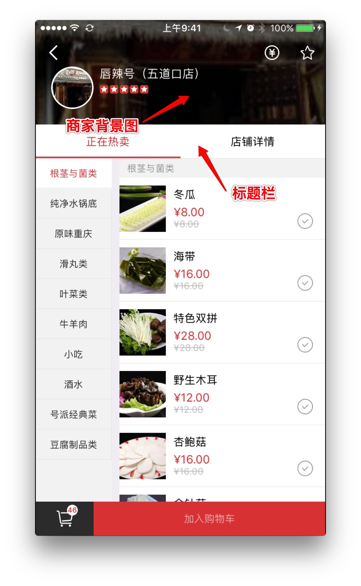
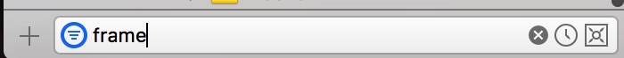
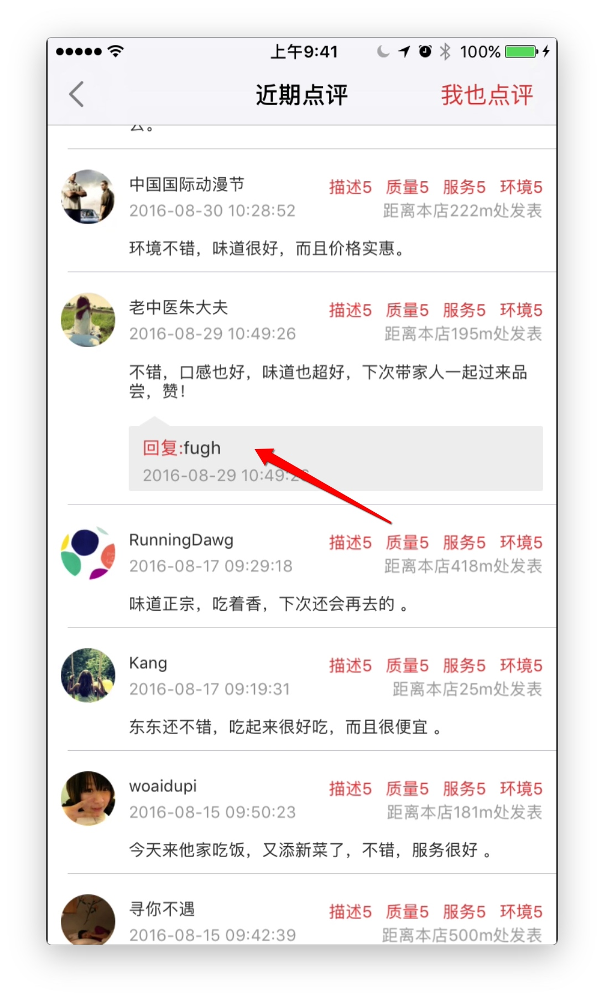

这里总结下大部分人不熟悉的页面.
##1. 秒杀
这个活动已经结束,代码位置:SecKill(秒杀) 调用这个活动不需要传递任何参数,只需要调用XZSecKillViewController就可以了.
链接在 .m文件的头部,是一个宏定义,方便修改.这个页面分为两个部分.一个是顶部的滚动条,能够显示相应的秒杀时刻,另一个是对应时间段的秒杀活动列表.这两个分别在两个控制器当中.
他们之间通过XZSecKillTimeProtocol代理进行数据传递.代理方法:
-(void)selectedProductId:(NSString *)productid;
时间段页面通过-(void)congfigDetailWithCurrentTime:(NSInteger)currentTime DetailTime:(XZSecKillTime *)detailTime NextTime:(NSInteger)nextTime EndTime:(NSInteger)endTime;列表页面显示该时间段的秒杀商品列表.
该活动在运营期间没有什么问题.如果再次开启秒杀活动出现问题最可能的地方就就是定时器出现了问题.需要检查的地方有
-
服务器返回的当前时间,结束时间
-
代码中计算的当前时间,timer 运行是否正常.
-
跳转到下一个秒杀时间处理是否有问题.
当前服务器配置的秒杀活动没有问题,如果下次再开启秒杀活动出现问题检测这几个地方就可以了.
商户详情界面说明
最原始的商户详情界面架构:https://github.com/Mekor/MKShowDetail
项目中对应的控制器XZShopDetailController
###需要传递的参数
- 项目刚开始的时候由于复杂度不是很高,而且流程比较单一,控制器之间传递的大部分都是模型,现在商户详情界面已经修改为传递
shopid - 另一个需要传递的参数是进入页面的方式,普通的方式进入和扫描二维码方式进入.主要区别就是扫描二维码方式进入需要再调用添加关注
###商户详情界面需要包含的自控制器
- WZShopDetailController
- XZShowCouponViewController
- XZProductListViewController
最多包含这三个控制器,里面显示那个控制器可以随意控制,方法名:- (void)addChildViewController
这三个页面都是继承自XZCustomViewController,在XZCustomViewController中控制商户详情页面有背景图的高度和没背景图的高度还有标题栏的高度.

需要注意的是@property (copy, nonatomic) void(^changeNavigationBar)(CGFloat alpha);通过这个属性可以控制导航栏的透明度.注:为什么不在控制器内部控制?原因:统一管理,需要更改导航栏状态就不需要再在三个控制器中分别进行了.只需要在XZShopDetailController中进行就好了.
###正在热卖页面
对应的控制器XZProductListViewController这个页面有两点需要注意: 1. 左侧的tableView滑动的时候不影响其他控件. 2. 左右数据之间对应关系.
关于滚动的时候更改整体布局原因:
/**
* 给继承者使用的: tag:1024
*/
@property (nonatomic, strong) XZTableView *tableView;
这个tableView滚动时在scrollViewDidScroll中做了2个操作:
- 调用
changeNavigationBar这个block来给外面的控制器,让其更改导航栏的透明度等操作. - 设置头部的高度.
@property (nonatomic, weak) NSLayoutConstraint *headHCons;
由于更改了头部约束使整个页面也都会跟着变化.
###原来的商户详情界面
由于业务调整,原来的商户详情界面整合到新的商户详情界面中来了-->店铺详情WZShopDetailController.
这个界面主要不同点就是cell样式多变,所以这个界面我采用的是给cell传递一个 frame model,这样好处:
- 只计算一次高度
- 视图只负责显示,所有布局都在frame model中进行.
这样做有好处也有缺点:好处是清晰明了逻辑比较清晰,但是这意味着需要添加更多的文件.使用这种方式的界面:

使用这种方式很容易写出点评页面:

逻辑顺序: model -> frame model - > view